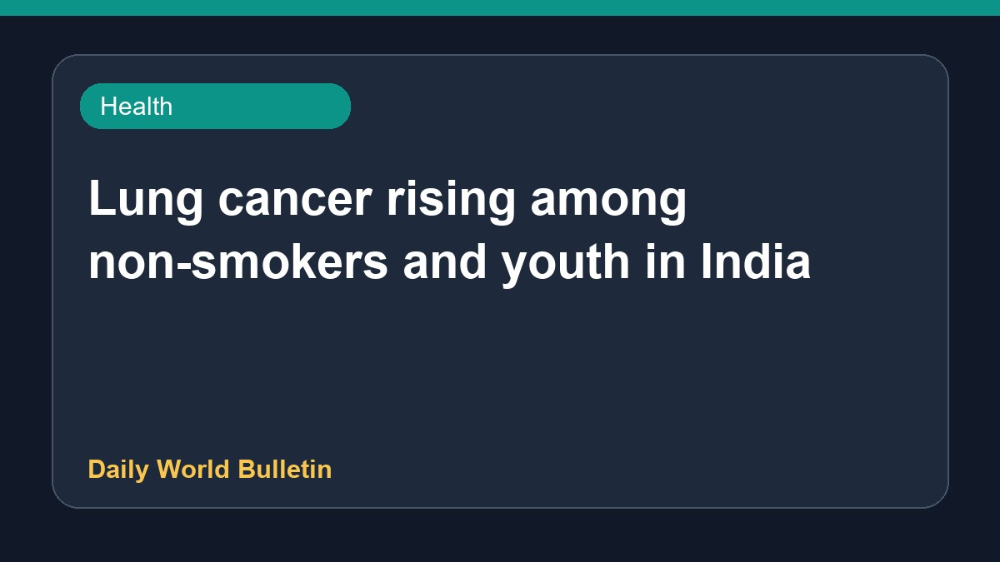

Lung cancer rising among non-smokers and youth in India

Recent health reports indicate a rising number of lung cancer cases among young people and non-smokers in India. Medical experts note that even fit individuals, such as gym trainers who have never smoked, are being diagnosed with the disease. On World Lung Cancer Day, doctors have highlighted several common myths that need to be dispelled. Health reports now rank lung cancer as India's deadliest cancer, affecting an increasing number of women and individuals with no smoking history. Experts urge people not to ignore persistent symptoms and to remain vigilant about early detection.
Original source: Health News Sources
Young gym trainer never smoked, stayed fit, yet was diagnosed with lung cancer; why you shouldn't ignore - The Times of India ↗
Young gym trainer never smoked, stayed fit, yet was diagnosed with lung cancer; why you shouldn't ignore - The Times of India ↗